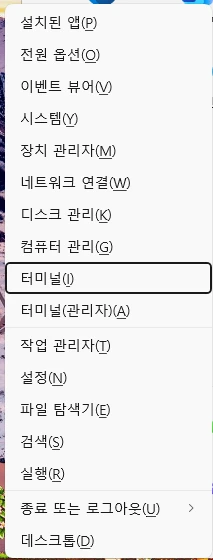

업무 창을
가리지 않는 띠
과수원은 Dock 바로 위에 높이 72pt 띠로만 자리 잡아요. 클릭은 그대로 아래 창으로 지나가고, 전체 화면 앱을 쓸 때는 알아서 숨어요. 과수원이 넓어지면 띠가 화면 폭까지 길어지고, 그보다 넓은 밭은 ⌥(윈도우는 Alt)를 누른 채 스크롤해 둘러봐요. 하늘에는 구름이 흐르고 새가 지나가고, 꽃이 핀 나무에는 나비가 모여요. 집 지키는 강아지 세 마리도 저마다 돌아다녀요.

하루 한두 번 들러
팔고, 심고, 키우기
점심과 퇴근 전에 1~2분이면 충분해요. 밤사이 가득 찬 창고를 팔고, 유레카 레몬부터 금귤, 블러드 오렌지, 한라봉, 포멜로, 황금 레몬까지 스무 가지 나무를 차례로 들여요. 밤에만 열리는 달빛 레몬, 겨울에 빠른 눈꽃 유자 같은 특별한 나무도 있어요. 밭이 다 차면 오른쪽 풀숲을 개간해 땅을 끝없이 넓히고, 땅을 일구다 보면 옛 우물이나 보물 상자 같은 옛 물건이 나와요. 레모네이드 가판대를 열면 과일로 레모네이드·과일청·마멀레이드를 만들어 더 비싸게 팔고, 찾아온 손님의 주문을 채워 팁을 받아요. 비·눈·바람 같은 날씨도 지나가요.

Mac이 꺼져 있어도
폰으로 팔고 심기
설정에서 '폰으로 보기'를 켜고 QR을 한 번 찍으면, 폰 브라우저에 내 과수원이 띠와 같은 모습으로 보이고(일하는 일꾼, 강아지, 구름·나비까지), 창고와 가득 찰 때까지 남은 시간을 Mac과 똑같이 보면서 팔고, 심고, 일꾼을 고용하고, 이웃을 돕고, 서리를 보내고, 소품 자리와 옷 색까지 바꿀 수 있어요. 화면 아래에는 띠가 늘 떠 있고, 밭·목장·바닷가를 고르면 그 일터의 모습이 보이며, 직군·조합·장터 일도 Mac 관리 창과 똑같이 할 수 있어요. Mac이 잠들거나 꺼져 있어도 폰에서 한 일은 예약해 두었다가 Mac이 깨어날 때 그 시각에 한 것처럼 반영하고, 이웃 물 주기와 선물은 바로 보내요. 앱 설치나 로그인은 필요 없고 집 밖에서도 돼요. Mac·Windows PC에서는 설정의 'AI 연결'을 켜고 Claude·Codex 옆 [연결]을 누르면, AI에게 "다 팔아줘", "이웃 도와줘"처럼 말로 과수원을 맡길 수도 있어요. 회사 Mac·집 Mac·Windows PC 를 같이 쓴다면 '기기 연동'을 켜고 코드 하나로 묶어 한 과수원을 이어 키울 수 있어요(한 번에 한 기기에서만 자라고, 기기를 바꿀 때도 그대로 옮겨져요).

바쁜 날엔
레몬 로봇에게 맡겨요
한 사용자가 Lemon Desk를 위해 만든 레몬 로봇은 띠 왼쪽 끝에 서 있다가, 일할 때면 드론으로 변신해 날아가요.
- 5분마다 창고를 팔아요
- 지금 사면 가장 빨리 본전을 뽑는 업그레이드를 골라 사요
- 마우스를 올리면 오늘 한 일과 다음 할 일을 보여 줘요
더 보기: 새 일터, 조합과 장터, 이웃, 일꾼, 꾸미기, 레몬 공방, 도감
과수원을 다 키우면
새 일터로
과수원이 무르익으면 직군을 하나 골라요. 철 따라 작물을 심는 텃밭, 닭·젖소·양·꿀벌이 사는 목장, 물때에 맞춰 김·굴·전복을 거두는 바닷가, 아니면 과수원 안에 공방을 차려 레몬 말랭이와 레몬 커드를 숙성해요. 일꾼은 기르는 것마다 맞는 도구로 일해요. 무를 쑥 뽑고, 소 젖을 짜고, 나룻배를 저어 산호 정원 위 바다의 줄을 끌어올려요. 동물도 반응해요. 젖을 짜면 소가 음메 하고, 털 깎은 양은 몸을 털고, 일꾼끼리 하이파이브도 해요. 가끔 일어나는 깜짝 장면은 도감에 남아요. 그 전부터 '뜻 세우기'로 가고 싶은 길을 정해 두면 띠에 작은 상징물이 놓여요. 직군을 키우며 받는 전문 점수로 다음 단계를 열고, 다섯 번째 단계에서 명인이 되면 그 직군만의 물건을 만들어요. 띠는 과수원과 새 일터를 번갈아 걸 수 있고, 창고가 찬 일터로 저절로 바뀌게 할 수도 있어요.

조합과 장터,
날씨를 읽는 재미
조합은 태풍·가뭄·한파·적조를 이틀 전에 알려 주고, 재해 보험과 판매 보험, 시작 대출, 오늘 시세를 한곳에서 보여 줘요. 주마다 납품 주문이 오고, 가끔 행상 할아버지가 수레를 밀고 귀한 물건을 팔러 와요. 장터에서는 다른 과수원과 물건을 조합 코인으로 사고팔고, 구하는 물건을 올려 두면 누군가 올렸을 때 알려 줘요. 이웃에게는 씨앗·새끼·치어를 보내고, 정해진 말로 쪽지를 주고받아요.

이웃과 물 주고
과일 주고받기
이웃 찾기에서 마음에 드는 과수원에 이웃 요청을 보내고, 상대가 수락하면 이웃이 돼요(받은 요청은 거절하거나 차단할 수도 있어요). 친구에게는 초대 링크 하나만 보내면 돼요. 하루 두 번(오전·오후) 물을 주러 가면 이웃 과수원이 빨리 자라고, 내 일꾼이 그쪽 띠에 찾아가 물을 주고 인사해요. 레벨 차이가 큰 후배 이웃에게는 일꾼을 출장 보내고, 비싼 과일 바구니와 아직 못 연 나무 묘목을 보내 키워 줄 수 있어요. 후배가 졸업하면 선생님 깃발이 생겨요. 고마움이 쌓이면 벤치, 화분, 새집 같은 소품이 열리고, 오래 비운 밭에 쌓인 잡초는 이웃이 대신 뽑아 줘요.

레벨이 오를수록
달라지는 일꾼들
레벨 5, 10, 15, 20마다 장비가 바뀌어요. 쇠삽과 장갑에서 시작해 공구 벨트, 은 바구니, 마지막엔 황금 도구와 레몬꽃 화관까지. 레벨 10부터는 역할마다 생김새가 다른 일꾼을 한 명 더 고용해 여섯 명이 함께 일해요. 매니저 도담을 고용하면 창고가 찰 때마다 대신 팔고, 빈 칸에 심고, 다음에 살 것까지 골라 사 줘서 주말에도 과수원이 멈추지 않아요. 커스텀 도담에게는 땅 넓히기·일꾼 키우기·새 나무 열기·서리·이웃 돕기 같은 할 일을 슬롯에 순서대로 넣어 원하는 것부터 맡길 수 있어요. 레벨이 오르면 슬롯이 늘고, 알뜰·수집가·반장·사장님·정원사·바리스타·개척자 도담 중에서 목표를 골라 맡길 수도 있고, 흥정 실력도 함께 늘어요.
도감에는 특별한 레몬·병 레시피·하늘 일기·일꾼 앨범이 있고, 엉뚱한 도전과 숨은 도전을 이루면 칭호와 나만의 레몬 품종 같은 보상이 열려요. 자랑 게시판에서는 서로의 과수원이 움직이고, 스탬프로 반응하고, 이주의 하이라이트에 오르면 트로피를 받아요.

내 취향대로
꾸미는 과수원
햇살, 봄빛, 노을, 달밤 테마와 일꾼마다 일곱 가지 옷 색을 고를 수 있어요. 시간에 따라 아침엔 따스하게, 저녁엔 노을빛으로, 밤엔 랜턴과 반딧불이 켜진 과수원으로 바뀌어요.

레몬 공방에서
나만의 나무와 친구 만들기
창고가 자라면 레몬 공방이 열려요. 품종대에서는 나무와 열매를, 친구대에서는 띠를 돌아다니는 손님을, 소품대에서는 꾸미기 소품을 만들어요. 만들 것을 고르고 마음에 드는 모양과 색을 누르면 버튼 하나로 띠에 놓여요. 더 다듬고 싶으면 부품을 층으로 쌓고 색과 무늬를 칠하고, 픽셀 몇 개를 직접 고칠 수도 있어요. 만든 나무는 창고 옆 품종 뜰에 심기고, 친구는 띠를 걷고 뛰고 날아다녀요. 작품에는 한 번 정하는 나만의 서명, 레몬 인장이 찍혀요. 이웃에게는 얼굴을 눌러, 다른 친구에게는 링크 하나로 보내고, 둘러보기에서 마음에 드는 작품을 내 띠에 바로 둘 수도 있어요. 그리고 한 주 동안 가장 널리 퍼진 작품은 구경 수레에 실려 모든 과수원 띠를 지나가요.

스무 가지 나무 도감과
숨은 비밀 스무 개
심어 본 나무와 딴 열매가 도감에 쌓이고, 아직 못 만난 나무는 실루엣으로 기다려요. 월요일 아침, 퇴근 시각, 명절에 숨은 비밀을 찾아 비밀 기록을 채워 보세요. 한 주의 수확은 카드 한 장으로 저장하고 공유하고, 계절마다 봄꽃, 레모네이드 가판대, 낙엽, 눈사람으로 과수원도 옷을 갈아입어요.

Windows에서는
한 줄로 설치해요
PowerShell에 아래 한 줄을 붙여 넣으면 설치 파일을 받아, 올려 둔 파일과 똑같은지 확인한 뒤 설치해요. 브라우저 경고나 'Windows의 PC 보호' 창이 뜨지 않고, 관리자 권한도 필요 없어요.
irm https://github.com/cbs9799/lemondesk-web/releases/download/windows/install.ps1 | iex시작 단추를 오른쪽 클릭하고 터미널을 눌러요. '관리자'가 붙지 않은 쪽이에요. Windows 10은 Windows PowerShell이에요.

복사한 한 줄을 붙여 넣고(Ctrl+V 또는 오른쪽 클릭) Enter를 눌러요.

1~2분 뒤 '다 됐어요'가 나오고 화면 아래에 과수원 띠가 떠요. 다음부터는 시작 메뉴에서 Lemon Desk를 켜요. 업데이트는 앱이 알아서 받아요.

왜 브라우저로 받으면 경고가 뜨나요?
- Lemon Desk for Windows는 아직 코드 서명 인증서가 없는 무료 베타예요(지금 준비하고 있어요). 그래서 브라우저로 받은 설치 파일은 Windows가 '알 수 없는 게시자'로 보고 경고를 띄워요.
- 한 줄 설치도 같은 설치 파일을 받아요. 다만 GitHub에 함께 올려 둔 SHA-256 값과 똑같은지 먼저 확인하고, 다르면 설치하지 않고 멈춰요. 무엇을 하는지는 스크립트 원문에서 볼 수 있어요.
- 내 사용자 폴더(
%LOCALAPPDATA%\LemonDesk)에만 깔리고, 관리자 권한·드라이버·백그라운드 서비스를 쓰지 않아요. 지우려면 설정 > 앱 > 설치된 앱에서 Lemon Desk를 제거해요. - 설치 파일로 받고 싶다면 여기서 내려받아요. 처음 열 때 'Windows의 PC 보호' 창에서 추가 정보 → 실행을 눌러요.
- Windows 11의 '스마트 앱 컨트롤'을 켠 PC에서는 서명 전까지 어느 방법으로도 열리지 않을 수 있어요.
베타는 무료예요.
- 광고 없음게임 중에 아무것도 끼어들지 않아요.
- 인앱 결제 없음더 빨리 자라게 하는 유료 아이템이 없어요.
- 뽑기·접속 보상 없음매일 들어오라고 조르지 않아요.
- 필요한 것만 공유과수원은 내 컴퓨터에 저장하고, 서버에는 켠 기능에 필요한 것만 보내요. 자세히